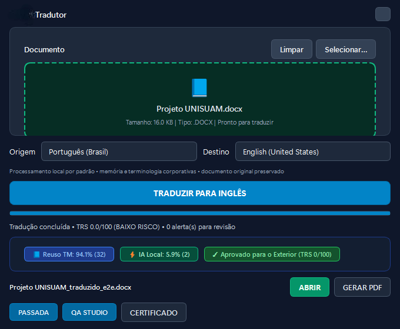
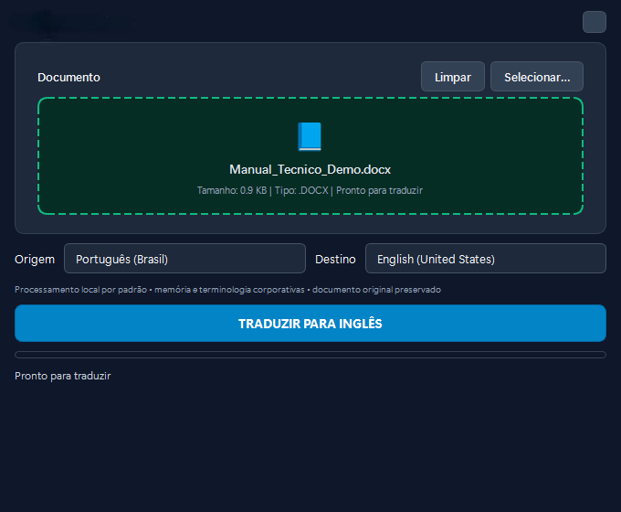

The problem
Some technical documentation needs to be available in Portuguese and English. Translating files one by one took time, and common translators could disrupt tables, images, formatting and technical terms.
TECHNICAL DOCUMENTS · WINDOWS
INTERNAL USEPortuguese ↔ English in Word and ODT
I built a desktop app that translates technical documents without pulling apart tables, images or formatting. Translation runs locally by default; people review the result and can create a bilingual PDF for reference.

THE WORKFLOW

Some technical documentation needs to be available in Portuguese and English. Translating files one by one took time, and common translators could disrupt tables, images, formatting and technical terms.
I built a desktop app that translates DOCX and ODT files, keeps their structure and prepares a bilingual version for review and PDF export.
A person opens a document, chooses the translation direction and reviews the result. In bilingual PDFs, document controls help readers switch between Portuguese and English.
People across different company areas use the translator to prepare technical documentation in English, including Quality, leadership and employees who need to share material with other audiences.
The workflow reduces the rework of rebuilding a document after translation and leaves the material ready for review by someone who knows the subject.
Translating words was not enough; document structure had to survive changes to the translation engine. I added automated checks to catch document regressions as the app evolves.
Technology
Python · PySide6 · DOCX/ODT processing · local translation · translation memory · QA · Windows packaging.
What “local” means
The main workflow processes translation on the computer. Optional features that depend on a configured service are not described as offline processing.
I build and support the app used internally. The interface is real, but the file shown is fictional; no company documents are published.